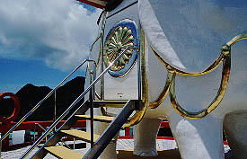

多宝仏塔（ムー大陸博物館）/鹿児島県開門町
指宿温泉に程近い開門町。
付近には開門岳、回転式そうめん流し発祥の地、イッシーでお馴染みの池田湖などがあり、観光地っぽい雰囲気を漂わせている。
で、そんなエリアに多宝仏塔なるものがある。
ここの運営は平等大慧会なるいわゆる仏教系の新興宗教団体が運営しているそうだ。
有無を言わさない看板につられるまま矢印に従う。
山道を登っていくと何ともキテレツな門が現れる。
ここが多宝仏塔の入口だ。
怪し気な音楽が聞こえる中、門の左手にある受付に向かう。
ここの入場料は納志。幾許かの金を賽銭箱に入れて、いよいよ門を潜る。
するとそこには・・・
 ・・・変な模様が描かれている道が延々と続いているだけであった・・・
・・・変な模様が描かれている道が延々と続いているだけであった・・・
それにしても広大な敷地のようである。しかもこんな山の中でも花や木がきれいに手入れされており、ここの経済的規模が伺い知れる。
で、猛暑の中歩く事数分、やっと建物が見えて来た。
うっ。
思いっきりSF＆怪しげ系の建物だ。
白い建物に赤の縁取り。塔の様なものが多宝塔である。
暑いので多宝塔行く前に早くも休憩。売店にて飲み物を買おうとすると・・・
おっ、教団オリジナルドリンクプライムテンの自販機発見！
早速購入。一気飲み。味は酒の入ってないウメッシュといったところ。
暑かったのでも少しさっぱりしたモノが良かったなあ・・・ちなみに右の自販機にはプライムテンゴールドが・・・
アコヤ橋だそうで。
さて、ノドも潤ったし（後味悪いが）、多宝塔へ向かおう。
手摺の♀マークのこれでもかという連続具合が凄い。
安いSF映画の書き割りを思いっきり真面目につくってしまた感じだ。
妙な塔は象さんの上に乗っている。象さん、頑張れ！
こんなお方達が四隅に。夜になったら照らすんでしょうか。
目の前には開聞岳が。
お供物はもちろんプライムテン＆プライムテンゴールド
♀♀♀♀♀♀♀♀

象さんの横っ腹には思いっきり菊の紋をアレンジしたマークがついた扉が。
鍵がかかっていたので中に何があるのかは判りませんでした。
それにしても尋常なデザインセンスではない。
センスオブ仏教とSFっぽいデザインを無理矢理くっ付ける辺りが堪らない。
真面目なんだかふざけてるんだか良く判らないところが凄い。
多宝塔の下には講堂らしきものが。
70年代に考えられた未来風景とか宇宙人の基地とかってこんなだったような・・・
♀♀♀♀♀♀♀♀
で、ムー大陸博物館である。かつてはムー大陸博物館と称していたが数年前に改装し、寳台寳物館と名付けられた。立っっっ派な博物館である。
内部は撮禁なのであまり載せないが展示はとにかくムー大陸がここにあった事の証明に血道をわけている。
かなりリキ入った展示だったが、リキが入れば入る程、訳が判らなくなっていくところが素晴らしい。
大体、新興さんといえども仏教の教団に何で急にムー大陸が出て来るんだ？
その辺をあまり詳しく知ろうとすると、ここに入信して修行か何かしなきゃならなくなるかも知れず、それは是非遠慮したいところなので、ここは軽く流しておきましょう。
ただ、少し心配だったのは、隣にいた我が愚息が恥ずかしそうに「ね、ムー大陸ってホントにあったの？」と真面目に囁いて来た。
取り敢えずさあね、フフフ・・・といっておきました。
♀♀♀♀♀♀♀♀
ところで、ここの展示、最後の方は平等大慧会の宣伝大会みたいになっていたのだが、その中で、涅槃城なる楽し気な物件がある事が発覚。
場所はここ開門町とは錦江湾を挟んだ佐田町。よっしゃあ〜、行くぜ涅槃城！
→涅槃城に行きましょう
2001.7.
珍寺大道場 HOME